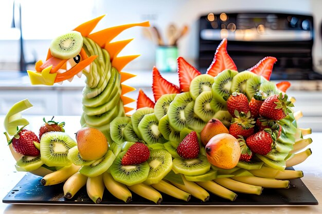

Fruits and vegetable carving
Free Entry|Free Food|Cameras are allowded

Dont miss any of your important events.stay Updated
Fruits made the most beautiful fruit cake for our dad's birthday, and it made the day so special to give our dad back something so nice. And not only did it look beautiful, it tasted amazing. Could not recommend this company enough, you will not regret it!The most incredible and intricate watermelon carving and gorgeous fruit platter, so many fab comments on them both and made the perfect addition to my moms 50th birthday tea. Didn’t think what’s she’s capable of was even remotely possible!! Will 100% use her again and recommend her to anyone who is looking for a fruit carver. Loveliest lady and drove over an hour to deliver to me. Couldn’t recommend her enough!Carving fruits and vegetables is an art. Making attractive and colourful designs using fresh and seasonal produce is a growing trend in top restaurants around the world. For those who are fascinated by the art and want to learn it, Our Sacred Space is hosting Fruits and Vegetables Carving Workshop this Sunday.
9th street,National park,coimbatore,631092